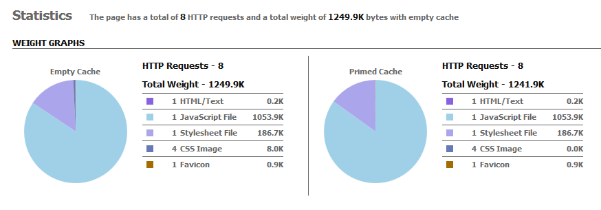
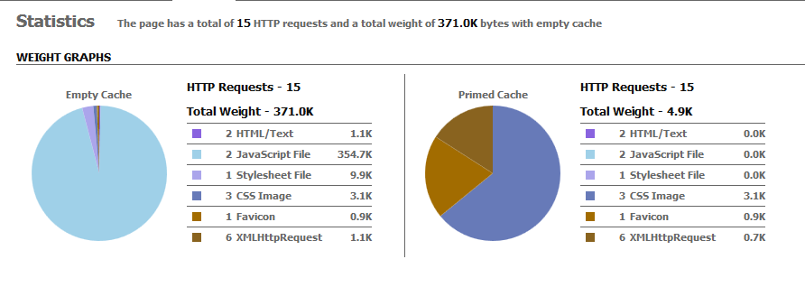
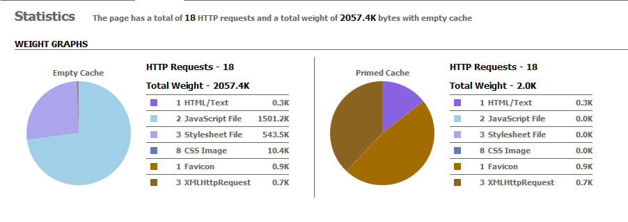
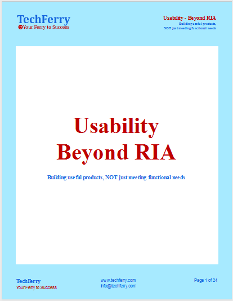

ExtJS vs AngularJS
|
ExtJS and AngularJS are the two industry leading frameworks for Rich UI development.
TechFerry has had a chance to develop multiple Rich UI single page applications using both ExtJS and AngularJS.
This articles pens down our experience working with these two technologies for multiple applications.
It compares ExtJS and AngularJS over 30+ points around benefits, architecture, testing, mobility, performance, build and deployment among other things.
|
|
We developed a test application in both ExtJS and AngularJS to understand architectural details
and to conduct detailed performance comparison tests.
For performance results, we used similar set of components, adopted prescribed build processes to make sure we are comparing apples to apples.
ExtJS vs AngularJS:
|
- Industry's most powerful Rich UI application development framework
- Unparalleled cross-browser compatibility
- Advanced MVC architecture
- Plugin-free charting
- Modern UI widgets
|
 AngularJS AngularJS
- HTML enhanced for web apps!
- Fully extensible and works well with other libraries.
- Open-source JavaScript framework, maintained by Google
- Declarative programming approach
|
|
|
| Sno |
Features |
ExtJS |
AngularJS |
| 1. |
One stop shop for rich UI applications |
✔ |
✘ |
| 2. |
Rich suite of theme-able UI components |
✔ |
Fortunately, there are a number of open source and
commercial components which provide integration for AngularJS including AngularUI, AngularUI Bootstrap,
Kendo (and Angular-Kendo), Wijmo and others. |
| 3. |
Designed for Single page apps |
✔ |
✔ |
| 4. |
Cross browser compatibility |
✔ |
AngularJS relies on jqLite/jQuery that provides cross-browser compatibility.
However integration with 3rd party libraries may require cross browser compatibility.
Note: AnugularJS (1.3 and above) has dropped IE8 support while Sencha ExtJS 5 will continue to support IE8.
If IE8 support is a requirement for your enterprise customers, ExtJS should be considered.
|
| 5. |
Charts |
ExtJS standalone charts are the industry's most powerful and most advanced, are plugin free and
sufficient for most business applications. |
AngularJS D3 Charts which are basically the integration with D3 charts makes its presence amazing in charting and graphing capabilities.
Fall in love with D3 charts at D3.js.
|
| 6. |
Learning curve |
High |
Medium |
|
Architecture
|
| 7. |
Application Design Framework |
ExtJS 5 supports both MVC (Model-View-Controller) and MVVM (Model-View-ViewModel) |
MVW (Model-View-Whatever).
It can support popular
patterns such as Model-View-Controller or Model-View-ViewModel |
| 8. |
Dependency Injection |
Ext JS can be augmented with Deft JS to add an Inversion of Control (IoC) container,
for dependency injection |
✔ |
| 9. |
Two way data binding |
✔ |
✔ |
| 10. |
Direct Dom manipulation |
✔ |
✔ |
| 11. |
Modular |
✔ |
✔ |
|
Testing
|
| 12. |
Automated testing Support |
Possible with external tools. |
✔ |
| 13. |
Testing framework or Test runner |
Several popular third-party JavaScript testing frameworks such as Siesta (optimized specifically
for Ext JS), Jasmine and Mocha are being used for testing. |
AngularJS ships with its own end-to-end test runner (Karma) to facilitate integration testing.
Protractor is end to end test framework for Angular apps. |
|
Performance
|
| 14. |
Dom Approach |
Depth-First, Bottom-Up approach |
Directives are linked in a Depth-First, Bottom-Up approach to the DOM
(Document Object Model) tree.
Controllers are linked in a top-down manner.
|
| 15. |
Performance |
Higher footprint/weight and hence ExtJS is comparetively slower. |
In our performance tests, AngularJS was 3 times lighter than ExtJS. See Performance comparison stats. |
| 16. |
Lightweight - small download footprint |
✘ |
✔ |
|
Mobility
|
| 17. |
Mobile support for web applications |
Sencha recommends using Sencha Touch for mobile versions of the application. Components like NestedList are far better than Grids for usability on mobile devices. However, this may mean separate effort for mobile versions of your app. |
Responsive web apps using ng-touch library, angular-gestures and angularJS responsive modules. |
| 18. |
Cross platform native mobile applications/Hybrid apps |
Possible with Sencha Touch and Apache Cordova/Phonegap integration. |
Possible with Trigger.io, Cordova/Phonegap integration,
Ionic framework which is optimized for AngularJS and is used for developing rich
and robust mobile applications. |
| 19. |
Mobile sites |
Sencha touch is used to develop mobile sites. |
AngularJS responsive modules (angular-responsive, angular-deckgrid etc),
UI Bootstrap, AngularJS responsive directives, angular-gestures and the
ngTouch library. |
|
Routing
|
| 20. |
Built in router |
✔
Introduced in ExtJS 5 |
✔ |
| 21. |
Deep linking |
✔
Introduced in ExtJS 5 |
✔ |
| 22. |
Browser history, forward and back buttons Support |
✔
Introduced in ExtJS 5.
Possible through Ext.util.History in earlier versions. |
✔ |
| 23. |
Browser's bookmark support |
✔
Introduced in ExtJS 5 |
✔ |
| 24. |
SEO support |
Most of the single page apps which work behind authentication may not require indexing for SEO.
For public pages, either you can use static HTML/CSS or if you do need to use dynamic content, consider Ajax
based SEO. |
Consider Ajax based SEO with either Prerender.io or headless browser support in your web-server. |
|
Deployment
|
| 25. |
Build tools |
Sencha cmd tools for ExtJS 4.x+ and
Sencha sdk tools for upto ExtJS 3.x |
3rd party Grunt tool |
| 26. |
Package Manager tools |
Sencha cmd tools |
Yeoman, Grunt and Bower |
|
Licensing and Support
|
| 27. |
License: open source or commercial |
Per-seat / per-server commercial license and open source under GPL license. |
It is an open-source JavaScript framework under MIT license. |
| 28. |
Full documentation suite, tutorials, videos examples, trainings |
✔ |
✔ |
| 29. |
Support: general discussion, reporting bugs and making feature requests |
Web-based public and premium (paid support subscribers only) support |
public support |
| 30. |
Complete fun and satisfaction: no management concern of integrating new releases and bug fixes from the selected
3rd-party libraries throughout the application's development lifecycle |
✔ |
✘ |
|
Others
|
| 31. |
Built in animation support |
✔ |
✔ |
| 32. |
Deferred and Promises |
DeftJS provides a number of extensions for ExtJS, including Deferred and Promises. |
✔ |
| 33. |
Dirty Checking |
✔ |
✔ |
| 34. |
Deferred Bootstrap |
Until now, ExtJS applications' testing has never required delay in the Bootstrap as third-party JavaScript testing
frameworks which are used for ExtJS application testing do not require deferring the bootstrap. |
Angular Scenario Runner and Batrang require Deferred Bootstrap and hence
Deferred Bootstrap concept is introduced to allow end to end tests. |
|
To evaluate the performance aspect of these two frameworks, we developed a small application
with a simple grid, tree and a chart component. The prescribed build process for both these
technologies were performed - so we can have minified builds for exact weight comparison.
YSlow was used to collect the performance metrics. Other details:
- ExtJS: using grid, tree and chart components.
- AngularJS: using angular-charts.min.js, angular.min.js, jquery.min.js,
angular-route.min.js, ng-grid-2.0.7.min.js, angular.treeview.min.js, angular-animate.js
modules.
- The same http requests, for the data part of these components are used, going to the same web server.
- Conclusion: ExtJS is 3 times heavier than AngularJS.
ExtJS:

AngularJS:

If we use ext-all, then the stats are:

|
Use ExtJS if:
- You want to use handy components delivered with Sencha Ext JS. It is a huge time saver.
- You do not want to worry regarding cross compatibility issues while Programming and Developement.
It is a big plus.
- You or your client need specialized licensing or an accountable party to call for support.
- If separate rich desktop applications (with Sencha ExtJS) and mobile web applications (with Sencha Touch)
is valuable.
- If paid support contracts and a per-seat / per-server commercial license is affordable.
Use AngularJS if:
- Smaller Footprint is required. For more details, see the
Performance Comparison Stats.
- Responsive design is a requirement for your application.
- Your organization find value in automated testing and automated testing is a part of your
development culture.
- It would be cheaper to integrate existing 3rd-party components which are free.
- Your team is comfortable with CSS and dealing with cross-browser compatibility issues.
- If the team will be able to manage integrating new releases and bug fixes from the selected
3rd-party libraries throughout the application's development lifecycle.
|
|
|
|
We have tried to classify architectural differences between ExtJS and AngularJS
along the following 10 dimensions.
- Application Design Framework
- Components
- Routing benefits
- Testability
- Data Binding
- SEO Friendly
- Mobile Solutions
- Dom Approach
- Deferred and Promises
- Dirty checking
- Deferred bootstrap
|
Summary:
ExtJS is component based (Grid, Tree, Forms, Charts); the code begins with extending API classes and configuring models,
customizing the presentation or behavior/events if needed, adding these components to containers/layouts. It follows object oriented principles and MVC pattern and direct interaction with DOM is rarely needed.
AngularJS, on the other hand, is declarative programming, we begin with adding AngularJS directives in plain HTML, configuring models, view configuration using templates and routes;
and the framework takes care of final DOM creation.
Since we are dealing with HTML, there is a direct interaction with HTML structure or DOM elements.
|
|
|
Ext JS:
- It supports both MVC and MVVM frameworks.
- As ExtJS application size and complexity increases, Sencha Touch and Ext JS can be augmented with
Deft JS to add an Inversion of Control (IoC) container, for dependency injection and dynamic
application assembly.
- It is component-based and hence modular.
|
AngularJS:
- AngularJS is HTML enhanced for web apps.
- It is described as a 'Model-View-Whatever' framework in which it does not prescribe a specific
application architecture or set of patterns. However it is sufficiently flexible to support popular
patterns such as Model-View-Controller or Model-View-ViewModel.
- It is module based. It autowires the dependency modules within the html elements.
|
|
|
Ext JS:
One of the primary attributes that distinguishes ExtJS from other JavaScript
frameworks is the inclusion of a rich suite of theme-able UI components.
Pros:
The handy components delivered with Ext JS are a huge time saver.
Cons:
Sencha components tend to produce verbose DOM output, resulting in many more tags that
might otherwise be required.
|
AngularJS:
- What AngularJS does not address is a rich library of user interface components.
- However, there are a number of open source and commercial components which provide integration
for AngularJS including AngularUI, AngularUI Bootstrap, Kendo (and Angular-Kendo), Wijmo and others.
|
|
|
ExtJS:
ExtJS 5 has introduced the support for the router.
- ExtJS 5 router can be used to track the application state through the use of the browser history stack.
- It allows for deep linking into the application which allows a direct link to a specific part of your application.
- It supports browser's bookmarks and browser's back / forward navigation.
|
AngularJS:
- AngularJS router wires together controllers, view templates, and the current URL
location in the browser. Using this feature we
can implement deep linking.
- Deep linking consists of using a hyperlink that links to a specific,
generally searchable or indexed piece of web content on a website. It lets us utilize the
browser's history (back and forward navigation) and browser's
bookmarks feature.
|
|
|
ExtJS:
- Applications built with Sencha's framework can be tested
using several popular third-party JavaScript testing frameworks such as Siesta (optimized specifically
for Ext JS), Jasmine and Mocha.
- The Sencha product suite does not include a testing framework or test runner.
|
AngularJS:
- AngularJS was designed from the ground up to create testable applications.
- It supports all three facets of automated testing: unit, integration and functional testing.
- The AngularJS team has also developed its own Karma test runner. In addition, 3rd party tool
Protractor is the end to end test framework for Angular apps.
|
|
Two way data binding is a glue between the application UI (User Interface)
and model objects, so that changes to an object's properties reflect in the UI and vice-versa.
|
ExtJS:
- ExtJS 5 components have a new bind config param that allows for two-way data binding,
which means live synchronization of data between the view and the model.
- In previous versions of ExtJS, it executes the data binding feature using its Store object but a little work needed to be done such as reloading the store etc.
| AngularJS:
Two way data binding in AngularJS is executed with the scope which is basically a model nested in a prototypal inheritance
tree of scopes (models).
Cons:
Application becomes laggy if there are 2000-3000 bindings in a template.
Bindonce is a great way to minimize the number of watches when most of the data presented in
your page, once rendered, are immutable and you need not keep watching them for changes.
|
Most of the single page apps which work behind authentication need not be indexed for SEO.
If you have some pages in your app which are public and which needs to be indexed, you can create
them separately, either with static HTML/CSS or if you do need to use dynamic content, consider Ajax
based SEO as described below.
Ajax based SEO: For the indexing of dynamic / ajax-based single page web apps, all you have to do is to
generate the additional static content so that when the crawlers access your page,
they get easy access to that static content and when the users access your page, they see the app.
To achieve this functionality you could either use some tools like Prerender.io: fully open-source
or you have to set up the headless browser support in your web-server
which is an additional effort.
|
ExtJS:
Ajax based seo is possible in ExtJS with hashbang urls' support in your web-server.
|
AngularJS:
- AngularJS seo with Prerender.io: When a crawler visits your page at hashbang url,
the Prerender service will check and see if it has a snapshot or already rendered page
for that URL, if yes, it will send it to the crawler, if not, it will render
a snapshot on the fly and send the rendered HTML to the crawler for correct indexing.
- Alternatively, you can also build support for hashbang URLs
which may require you to set-up your web-server to summon-up the
headless html browser.
|
|
|
ExtJS:
- Sencha Touch - the industry-leading and high-performance mobile HTML5 framework,
is used to develop powerful, universal mobile web apps / mobile website.
- Sencha touch integration with Cordova/Phonegap is used to develop the cross platform hybrid applications.
|
AngularJS:
- AngularJS can be used to develop responsive web apps / websites
although all the angular modules are not responsive.
- To develop the cross platform hybrid applications, integrate AngularJS with
- Trigger.io
- Ionic Framework - Advanced Html5 hybrid mobile framework and optimized for
AngularJS
- Cordova/Phonegap
|
|
|
ExtJS:
It follows the Depth First, Bottom-Up approach.
|
AngularJS:
Directives are linked in a Depth-First, Bottom-Up approach to the DOM tree.
Controllers are linked in a top-down manner.
|
|
Deferred and Promises break the complexities of asynchronous programming,
separate out the synchronous and asynchronous world, remove the tight coupling between the two
They are for asynchronous programming what try, catch and throw keywords are for synchronous programming.
|
ExtJS:
ExtJS augmented with DeftJS may provide Deferred and Promises. |
AngularJS:
AngularJS offers an implementation of the Q API for Deferred and Promises.
|
Dirty checking in nutshell: The framework compares the old value and new value and if they are
different, fires the change event.
|
ExtJS:
- ExtJS 4.x uses the store's binding feature to execute the dirty checking.
- ExtJS store allows you to delay the process of dirty checking via its autoSync
config which when set to false, the user changes are marked with dirty flags in UI and are
updated in batch when the user saves the store.
- To reflect the changes in the real data in UI, a little work is to be done like reloading the store etc
|
AngularJS:
- Angular uses the Digest Cycle to execute the dirty checking.
- With Angular api, you do not need to manaually call the digest cycle,
angular internally fires digest cycle followed by updation of the dom but
from third party api, you need to call $apply method to enter the digest cycle.
- Changes are reflected in the real data in UI as soon as the digest cycle is finished.
- The dirty checking is done asynchronously.
Cons:
- Application becomes laggy if there are 2000-3000 watches in a template... more
Bindonce is a great way to minimize the number of watches when most of the data presented in
your page, once rendered, are immutable and you need not keep watching them for changes.
|
Bootstrap means the initialization process. Deferred bootstrap is to make a delay in the bootstrap process to
mock out the heavy dependencies or for the instrumentation purposes. Deferred bootstrap is primarily
introduced to allow end to end tests.
Although deferred bootstrap has no value in the developement and testing of most single page applications, yet it serves
its value in AngularJS applications' end to end testing. Some javascript test runners such as Batrang
and Angular Scenario Runner (which are developed by AngularJS team for the end to end testing
of the angularJS applications) require deferred bootstrap.
|
ExtJS:
Several popular third-party JavaScript testing frameworks such as Siesta (optimized specifically
for Ext JS), Jasmine and Mocha, are being used for ExtJS applications testing
which do not require deferring the ExtJS application's bootstrap.
|
AngularJS:
-
Batrang is a new Chrome extension, recommended by the angular team, provides the tools to address
performance bottlenecks, visualize and debug applications.
- AngularJS Batarang and Angular Scenario Runner require Deferred Bootstrap
feature to hook into
angular's bootstrap process and sneak in more modules into the DI registry which
can replace or augment DI services for the purpose of instrumentation or mocking out
heavy dependencies.
|
Digest Cycle in AngularJS:
- The digest cycle is all about reacting to changes in data.
- Generally what happens is, the browser's event-loop waits for an event to arrive,
as long as it recives an event,
it emits the event on the input controls which is then captured in the
corresponding directive's event handler which calls apply function, to enter
into Angular execution context, with function/expression
(the work you wish to do in Angular execution context) as parameter.
- Model mutation is then executed in apply function with all
the error handling followed by the firing of the digest cycle in its finally phase.
- In all the Dirty Cycle mechanisms,
all the watchers in the watch list are iterated and in each iteration watch expression in
current scope is evaluated, old and new value of scope is compared and if both values differ,
then the corresponding listener of the watcher function is fired which upon execution
calls digest cycle again with one of the two possilities:
- If the listener function does not modify the scope then in the running digest turn, model is declared as stable and
digest loop is finished followed by the browser re-painting of the DOM node which was dirty.
- If scope is modified, then it will fire the other listeners, so the watchers
keep re-running until until no more watchers are fired and a
max limit of 10 iterations is reached when $digest will throw
'Maximum iteration limit exceeded' to prevent infinite loops.
- This dirty checking is done asynchronously.
Three mechanisms of Dirty Checking:
-
Reference-Based Dirty-Checking: The old value is compared to the new with the strict equality operator
=== which detect the new and old values are the same "physical" object.
It is the most efficient both in terms of computation and memory,
since it doesn't do copying or traversal.
It merely keeps a reference to the value around for comparison.
- Value-Based Dirty-Checking: It performs a deep-object-tree comparison.This means that within each $digest cycle,
AngularJS will check to see if the new and old values have the same structure.
- Collection-based dirty checking: It works by comparing physical object references. Collection watchers keep an internal copy of the
array or object, and traverse the old and new values in each digest cycle, checking for
changes using the strict equality operator === i.e. unlike the reference based dirty checking, it goes one-level deep and
performs an additional, shallow reference check of the top level items in the collection.
Cons of dirty checking:
Application becomes laggy if there are 2000-3000 watches in a template.
Although anything faster than 50ms is imperceptible to humans and you can't really show more
than about 2000 pieces of information to a human on a single page because anything more than that
is really a bad UI and humans can't process this anyway, yet while building any sort of widget or
data grid with two-way binding you may easily hit 2000 bindings without the bad UI.
Watcher:
By default all the model data that is bound to UI are being watched upon i.e.
they all have a watcher registered in the watch list, a collection used by digest cycle for the dirty checking.
You can also attach a watcher to the scope by using $watch function.
A watcher has two functions:
A watch function or a watch expression, which specifies the piece of data you are interested in.
A listener function which will be called whenever that data changes.
Asynchronous nature of dirty cycle:
Assignment such as $scope.username="angular" will not immediately
cause a $watch to be notified, instead the $watch notification is delayed
until the $digest phase. This delay is desirable, since it coalesces multiple
model updates into one $watch notification as well as it guarantees that
during the $watch notification no other $watches are running.
If a $watch changes the value of the model, it will force additional $digest cycle.
|
To get latest updates, you can follow TechFerry:
Next Steps: Download our FREE eBook

Usability - Beyond RIA
http://www.techferry.com/eBooks/Usability-Beyond-RIA.html
Usability, though a frequently used term but is the least understood in the industry. This report highlights how a magnificently designed product/solution can still make users struggle to achieve even the simple desired objectives.
This report is NOT an academic study, rather it share experiences on Usability with examples and implementations from software industry. It talks about gaps between user expectations and their actual interactions with products.
|
|